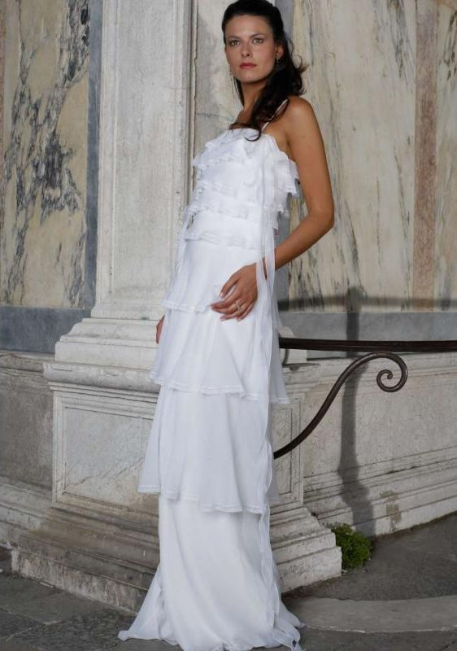
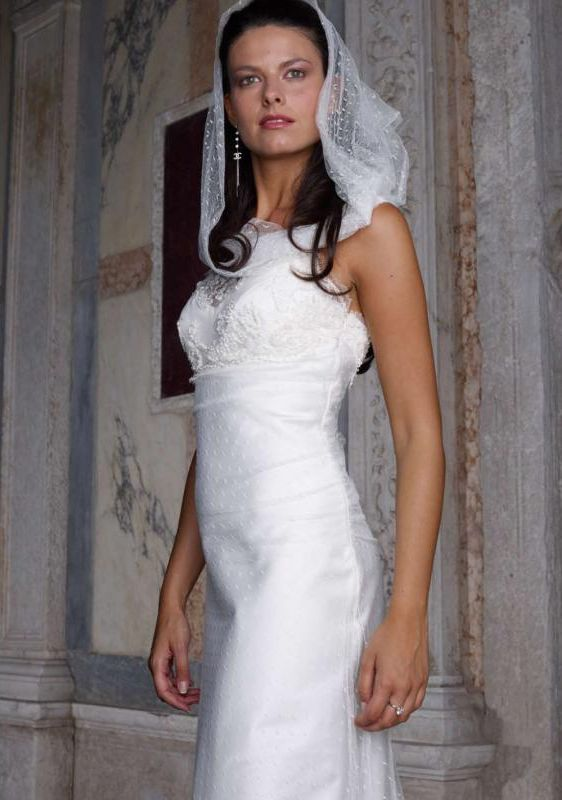
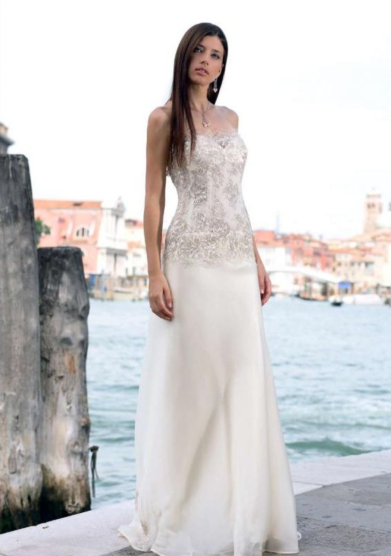
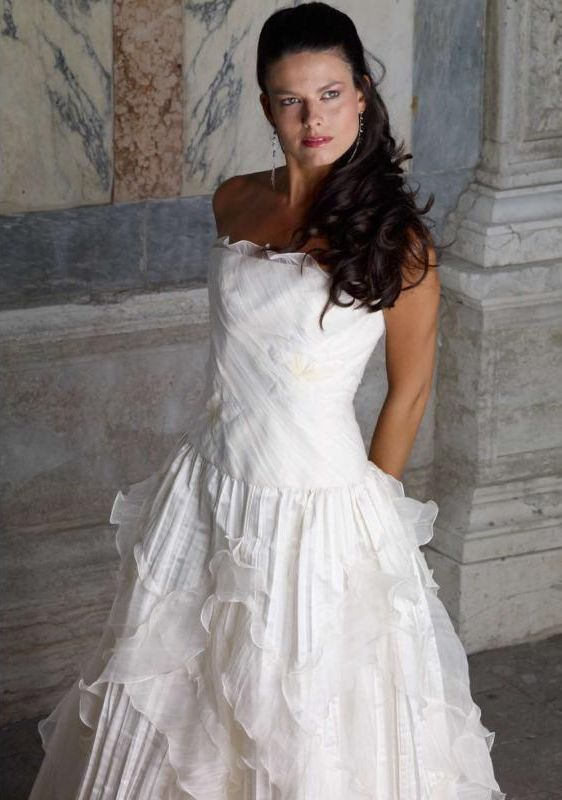
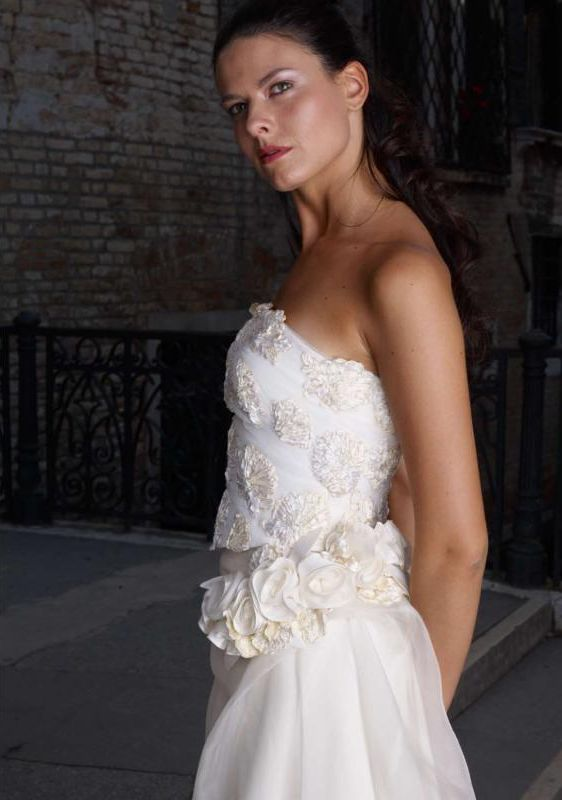
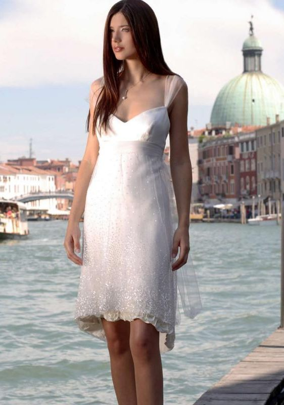
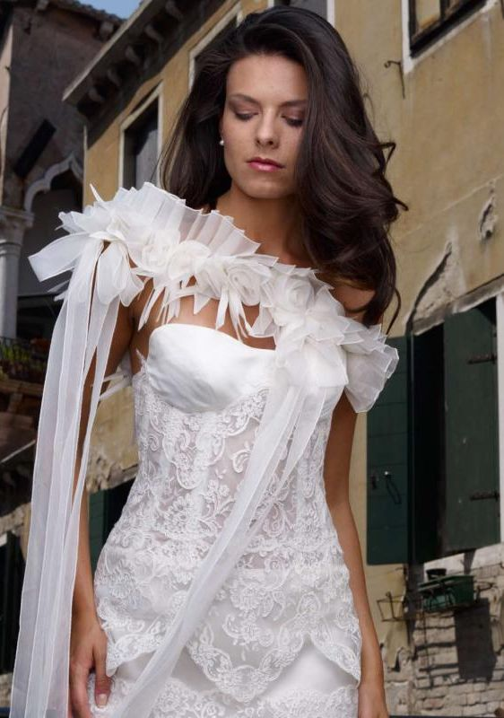

Venezia
Sartoria da sposa e da cerimonia, prodotta nella sede veneta con tessuti delle industrie tessili italiane. La collezione Venezia è fotografata tra le calli e sul Canal Grande.


Le collezioni si presentano ogni anno alla rassegna Sì Sposa Italia, a Milano. Le linee prendono dai palazzi veneti e dalla tradizione veneziana, con qualche richiamo al vetro di Murano.





rosyGarbo, Passaggio San Fermo 6, 35137 Padova. info@rosygarbo.it
Scelta raccomandata: Noto Serif Display 300 (titoli); Kumbh Sans 300, 400, per rosyGarbo, atelier sposa, Padova. Riferimento: Danielle Frankel Studio (daniellefrankelstudio.com), abiti da sposa, New York, riferimento del 02 di Rosy Garbo; le testate delle collezioni di Rosy Garbo. Carattere originale: Canela Light (Frankel); senza grazie sottile maiuscolo delle testate ("venice VENEZIA"). Attenzione: Noto Serif Display è parente di Noto Serif, che sta nei selettori di Google Stitch e di shadcn: solo il taglio Display, solo per titoli grandi in minuscolo.